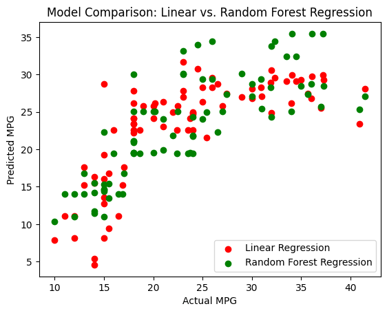

Pediatric asthma is a leading cause of emergency room visits, yet many existing machine learning models focus on genetic factors. This, in turn, overlooks critical environmental triggers. Fine particulate matter, PM2.5, is a major urban pollutant known to trigger respiratory conditions, but previous studies addressing these factors often suffer from low accuracy. There is also a need for high-precision modeling that can definitively map the non-linear relationship between specific air pollutants and healthcare outcomes.
Traditional linear models often fail to capture the complex relationships between atmospheric pollutants and health outcomes. A Random Forest Regressor is chosen specifically for its ability to handle non-linear data through ensemble learning. Additionally, by merging massive datasets from epa.gov and data.gov, the study creates a complex understanding of health in urban areas. The main motivation is to move from reactive to proactive medicine. If hospitals can predict days with higher patient volumes based on air quality, they can optimize staffing and resource allocation, which could possibly save lives and reduce medical costs.

The primary objective was to develop and train a machine learning model using merged datasets from EPA and government data to predict pediatric asthma ER visits. The technical goal was to evaluate the model's performance using R^2, MAE, and RMSE scores to create an ensemble learning model with high accuracy. The hypothesis was that if a machine learning model is trained on pollution and health data, then it can accurately predict the relationship between PM2.5 levels and pediatric asthma-related ER visits. The variables that were studied were the independent variable, PM2.5 concentration levels, and the dependent variables, the rate of pediatric asthma ER visits and model accuracy.